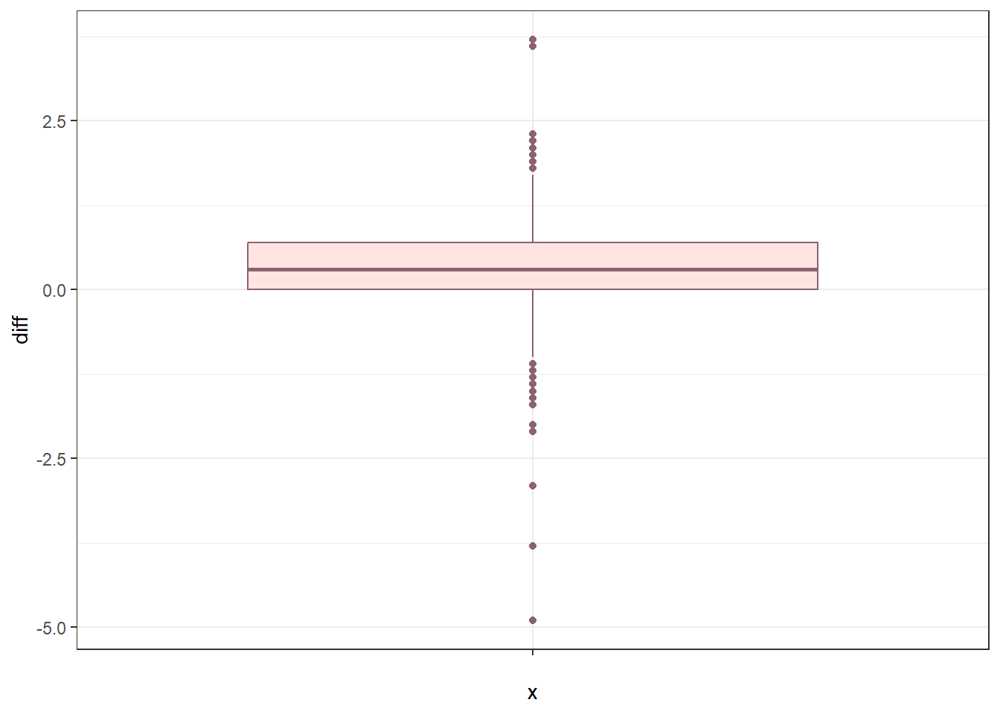
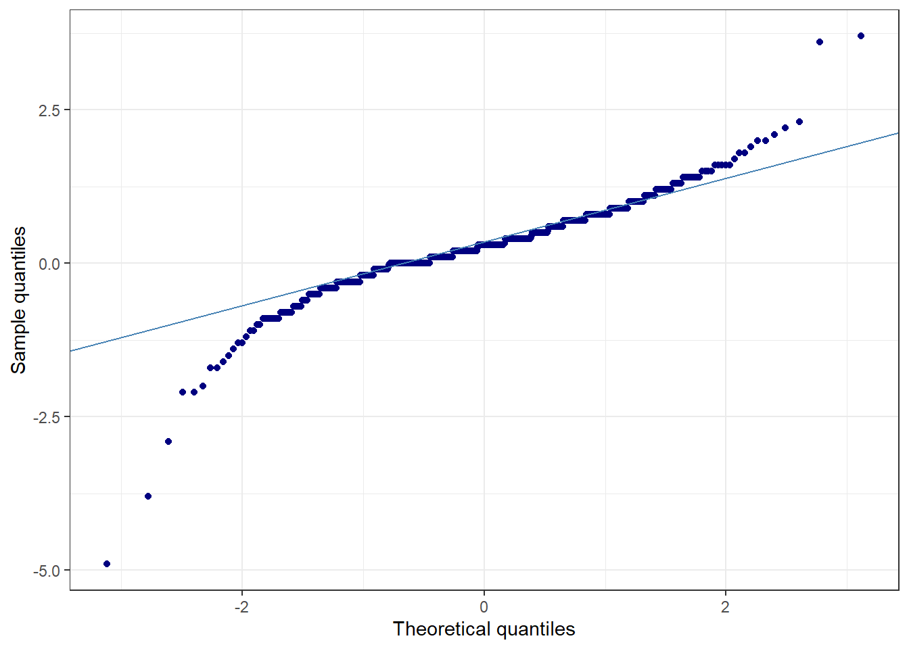
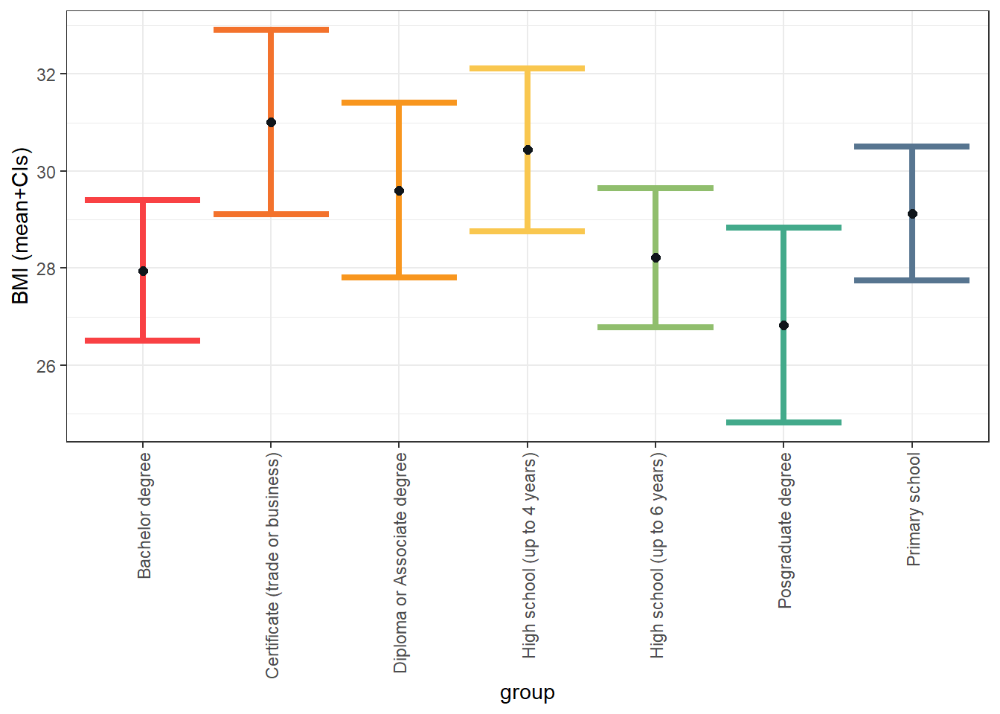

library(ggplot2)
library(tidyverse)
living_well <- read.csv("Data sets/Cleaned_data_pre_post.csv",
stringsAsFactors = TRUE) 6 Paired t-test and ANOVA
7 Hypothesis tests using the t-distribution

8 Paired t-test
The next dataset we will be using comes from the Living Well Multicultural – Lifestyle Modification Program. This file contains paired pre- and post-intervention measurements for adults who participated in the program between 2014 and 2017.
You can then save the file in your Datasets folder in your InferentialStats project folder that you created in the Introduction. You can give it a new name so that it is easier to call into R Studio.
If you open the file, you may notice that the first row is simply a title. We can ignore the title by including skip when we load in the data.
Once you’ve saved the file, you can load the dataset into R by typing:
We can take a look at the data to ensure it has been loaded in correctly.
str(living_well)'data.frame': 1112 obs. of 100 variables:
$ Time : Factor w/ 2 levels "Baseline","Post week8": 1 1 1 1 1 1 1 1 2 2 ...
$ Community : Factor w/ 9 levels "Afghani","Arabic-speaking",..: 2 2 2 2 2 2 2 2 2 2 ...
$ Location : Factor w/ 30 levels "44","Acacia Ridge",..: 6 6 6 6 6 6 6 6 6 6 ...
$ ID : Factor w/ 554 levels "ABA200879","ABD 010160",..: 295 294 38 296 191 192 297 10 295 294 ...
$ Drop_yn : Factor w/ 1 level "Complete": 1 1 1 1 1 1 1 1 1 1 ...
$ Dose_yn : Factor w/ 2 levels "<=6 doses, Incomplete",..: 2 2 2 2 2 2 2 2 2 2 ...
$ Dose : int 8 8 8 8 7 7 7 8 8 8 ...
$ Age : int 21 20 49 19 52 20 22 55 21 20 ...
$ Gender : Factor w/ 2 levels "Female","Male": 2 1 1 1 2 2 1 2 2 1 ...
$ Country_b : Factor w/ 23 levels "1 Afghanistan",..: 22 22 22 22 22 17 22 22 22 22 ...
$ Country_b_other: Factor w/ 21 levels " ","Australia",..: 1 1 1 1 1 1 1 1 1 1 ...
$ Time_aus : Factor w/ 6 levels ">20 years","1-5 years",..: 2 4 3 4 3 3 3 4 2 4 ...
$ language : Factor w/ 18 levels " ","1 Arabic",..: 2 2 3 2 3 17 17 2 2 2 ...
$ language_others: Factor w/ 51 levels " ","20 Samoan",..: 25 25 1 25 1 1 1 1 25 25 ...
$ Ethnicity : Factor w/ 82 levels " ","Acholi","Afghan",..: 1 1 1 1 1 1 1 35 1 1 ...
$ Postcode_SEIFA : Factor w/ 4 levels "999","High","Low",..: 4 4 2 4 2 2 2 4 4 4 ...
$ Postcode : int 4109 4109 4152 4109 4152 4152 4152 4109 4109 4109 ...
$ Edu_combine : Factor w/ 5 levels "999","Bachelor/Postgraduate",..: 3 3 5 3 3 3 2 5 3 3 ...
$ Education : Factor w/ 8 levels "999","Bachelor degree",..: 6 6 4 6 5 5 2 4 6 6 ...
$ Country_Q : Factor w/ 4 levels " ","999","Australia",..: 3 3 4 3 4 3 3 4 3 3 ...
$ Employ_comb : Factor w/ 5 levels "999","No paid work",..: 4 4 3 4 3 4 5 5 4 4 ...
$ Employment : Factor w/ 11 levels "999","Casual paid work",..: 9 9 7 9 6 9 2 2 9 9 ...
$ Household : Factor w/ 6 levels "999","Couple, no children",..: 6 6 3 6 3 6 6 3 6 6 ...
$ Referral : Factor w/ 13 levels " ","1 ECCQ website/newsletter",..: 1 9 9 9 9 3 3 9 1 9 ...
$ Weight : num 55.5 48.5 88.9 52.3 90.7 75.7 54 77 55 48 ...
$ Height : num 167 161 160 159 173 ...
$ BMI_cate2 : Factor w/ 5 levels "999","Normal weight",..: 2 2 3 2 3 2 2 4 2 2 ...
$ BMI_cate1 : Factor w/ 5 levels "999","Normal weight",..: 2 2 3 2 3 2 2 4 2 2 ...
$ BMI : num 19.9 18.8 34.6 20.8 30.3 24.5 21.5 26.2 19.7 18.6 ...
$ Waist : num 74 71 106 70 102 ...
$ Risk_new : Factor w/ 3 levels "999","No","Yes": 2 2 3 2 3 2 2 2 2 2 ...
$ Risk : Factor w/ 4 levels " ","999","No",..: 3 3 4 3 4 3 3 3 3 3 ...
$ WHtR_yn : Factor w/ 3 levels "999","High risk",..: 3 3 2 3 2 2 3 2 3 3 ...
$ WHtR : num 0.44 0.44 0.66 0.44 0.59 0.53 0.46 0.56 0.44 0.44 ...
$ BP_systolic : int 110 88 111 110 140 109 110 146 90 102 ...
$ BP_diastolic : int 70 54 63 60 58 59 64 78 75 60 ...
$ High_BP : Factor w/ 4 levels " ","999","No",..: 3 3 3 3 3 3 3 4 3 3 ...
$ Weight_pc_cate : Factor w/ 6 levels "999","A healthy weight",..: 2 3 3 6 3 3 4 3 2 2 ...
$ Weight_pc : Factor w/ 7 levels " ","1 A healthy weight",..: 2 3 3 5 3 3 6 3 2 2 ...
$ Weight_stt : Factor w/ 6 levels " ","1 Lost weight",..: 5 3 4 3 2 3 4 3 4 2 ...
$ Chronic_con : Factor w/ 4 levels " ","999","No",..: 3 3 3 3 3 3 3 3 3 3 ...
$ Chronic_name : Factor w/ 174 levels " ","Arteritis",..: 1 1 1 1 1 1 1 1 1 1 ...
$ Smoke_stt : Factor w/ 4 levels " ","999","No",..: 3 3 3 3 3 3 3 3 3 3 ...
$ Smoke_re : Factor w/ 8 levels " ","3","999",..: 4 4 4 4 4 4 4 4 4 4 ...
$ Smoke_num : Factor w/ 24 levels " ","0","0 (quit)",..: 1 1 1 1 1 1 1 1 1 1 ...
$ Alcohol_stt : Factor w/ 4 levels " ","999","No",..: 3 3 3 3 3 3 3 3 3 3 ...
$ Alcohol_safe : Factor w/ 4 levels " ","999","Not safe",..: NA NA NA NA NA NA NA NA NA NA ...
$ Alcohol_re : Factor w/ 5 levels " ","999","I don't consume alcohol",..: 3 3 3 3 3 3 3 3 3 3 ...
$ Alcohol_freq : Factor w/ 9 levels " ","1 Everyday",..: 1 1 1 1 1 1 1 1 1 1 ...
$ Alcohol_amt : Factor w/ 6 levels " ","1 Less than 1",..: 1 1 1 1 1 1 1 1 1 1 ...
$ Fruit_yn : Factor w/ 3 levels "999","Meet the guideline",..: 2 2 2 2 2 3 2 2 2 2 ...
$ Fruit_cate : Factor w/ 8 levels " ","999","Don't eat fruit",..: 4 8 7 4 4 6 4 4 7 7 ...
$ Fruit : Factor w/ 9 levels " ","0 Don't eat fruit",..: 8 6 7 8 8 5 8 8 7 7 ...
$ Vegetables_yn : Factor w/ 3 levels "999","Don't meet the guideline",..: 2 2 2 2 2 2 2 2 2 3 ...
$ Veggie_cate : Factor w/ 9 levels " ","999","Don't eat vegetables",..: 7 8 6 8 8 3 8 7 9 4 ...
$ Veggie : Factor w/ 10 levels " ","0 Don't eat vegetables",..: 5 7 4 7 7 2 7 5 6 9 ...
$ Milk_combine : Factor w/ 5 levels " ","999","Full fat/cream",..: 3 5 4 3 3 3 3 3 4 4 ...
$ Milk_cate : Factor w/ 10 levels " ","999","Don't consume any milk",..: 10 3 6 10 10 10 10 10 6 6 ...
$ Milk : Factor w/ 14 levels " ","0 Don't consume any milk",..: 5 4 6 5 5 5 5 5 6 6 ...
$ Takeaway_comb : Factor w/ 5 levels "<= 1 a week",..: 3 1 1 3 1 5 1 1 1 1 ...
$ Takeaway_cate : Factor w/ 9 levels " ","2-3 times per week",..: 2 7 7 2 7 8 7 7 9 7 ...
$ Takeaway : Factor w/ 10 levels " ","0 Never or rarely",..: 5 3 3 5 3 2 3 3 4 3 ...
$ Chips_comb : Factor w/ 6 levels " ","<=1 per week",..: 4 2 2 2 2 6 2 2 2 2 ...
$ Chips_cate : Factor w/ 9 levels " ","2-3 times per week",..: 2 9 7 9 7 8 7 7 7 7 ...
$ Chips : Factor w/ 12 levels " ","0 Never or rarely",..: 6 5 4 5 4 2 4 4 4 4 ...
$ Salty_snk3gr : Factor w/ 5 levels " ","1-3 times per week",..: 2 2 5 2 5 2 5 5 5 5 ...
$ Salty_snk_new : Factor w/ 6 levels " ",">=4 times/week",..: 3 3 5 3 6 3 6 5 6 6 ...
$ Salty_snk_cate : Factor w/ 8 levels " ","1-3 times week",..: 2 2 6 2 7 2 7 6 7 7 ...
$ Salty_snk : Factor w/ 8 levels " ","0 Never or rarely",..: 4 4 3 4 2 4 2 3 2 2 ...
$ Sweet_snk3gr : Factor w/ 5 levels " ","1-3 times per week",..: 3 5 2 3 5 2 2 3 5 5 ...
$ Sweet_snk_cate : Factor w/ 8 levels " ","2 or more times per day",..: 5 7 4 2 6 4 4 8 6 6 ...
$ Sweet_snk : Factor w/ 9 levels " ","0 Don’t consume any milk",..: 6 3 5 8 4 5 5 7 4 4 ...
$ Softdrink_3gr : Factor w/ 4 levels "1-3 times per week",..: 2 4 1 4 1 2 4 1 1 4 ...
$ Softdrink_cate : Factor w/ 8 levels " ","2 or more times per day",..: 2 7 4 7 4 8 6 4 4 6 ...
$ Softdrink : Factor w/ 8 levels " ","0 Never or rarely",..: 7 2 4 2 4 6 3 4 4 3 ...
$ Pr_meat_3gr : Factor w/ 4 levels "1-2 times per week",..: 2 1 4 2 1 2 4 4 4 4 ...
$ Pr_meat : Factor w/ 7 levels " ","1-2 times per week",..: 4 2 6 4 2 3 6 6 6 6 ...
$ Processed_meat : Factor w/ 7 levels " ","0 Never or rarely",..: 6 4 3 6 4 5 3 3 3 3 ...
$ Vegetarian : Factor w/ 11 levels " ","30","300",..: 10 10 10 10 10 10 10 10 10 10 ...
$ Walking : int 90 95 0 120 45 100 200 120 120 250 ...
$ Vigorous_lb : int 60 100 30 30 150 10 200 900 60 70 ...
$ Md_act : int 60 30 5 10 0 0 30 90 60 30 ...
$ Vigorous_act : int 30 30 0 15 0 0 100 90 120 250 ...
$ Act_comp_cate : Factor w/ 7 levels "999","A little less",..: 3 6 3 6 5 6 4 4 3 7 ...
$ Act_comparison : Factor w/ 8 levels " ","1 Significantly less",..: 5 2 5 2 7 2 4 4 5 6 ...
$ KL1 : Factor w/ 8 levels " ","999","A",..: 7 6 6 4 8 5 6 6 6 6 ...
$ KL2 : Factor w/ 8 levels " ","999","A",..: 8 5 8 5 8 3 3 6 3 3 ...
$ KL3 : Factor w/ 8 levels " ","999","A",..: 6 5 5 5 8 7 7 5 5 5 ...
$ KL4 : Factor w/ 7 levels " ","999","A",..: 4 6 5 5 6 6 6 6 6 6 ...
$ KL5 : Factor w/ 7 levels " ","999","A",..: 7 7 3 4 7 5 7 5 5 5 ...
$ KL6 : Factor w/ 7 levels " ","999","A",..: 7 4 7 5 7 7 6 5 6 6 ...
$ KL7 : Factor w/ 7 levels " ","999","A",..: 5 5 6 6 5 5 5 5 5 5 ...
$ conf_risk : int 10 8 8 10 1 7 7 9 9 10 ...
$ conf_manage : int 10 8 8 10 1 6 7 10 9 10 ...
$ Physic_act_yn : Factor w/ 3 levels "999","No","Yes": 3 3 2 3 3 2 3 3 3 3 ...
$ Physic_moderate: int 150 125 5 130 45 100 230 210 180 280 ...
$ Physic_vigo : int 90 130 30 45 150 10 300 990 180 320 ...
$ Physic_all : int 240 255 35 175 195 110 530 1200 360 600 ...
$ Knowledge : int 1 4 2 1 2 3 4 5 6 6 ...
[list output truncated]- How many variables are there?
- How many observations are there?
unique(living_well$Time)[1] Baseline Post week8
Levels: Baseline Post week8If we look at the Time variable, we can see that there are two levels: Baseline and Post week8. We also have an ID variable, which indicates that we have a repeated measurement for the baseline and post week 8 measurements. As we have one row for each measurement, this means our data is in long format. Another way to think about long format is that the same participant appears multiple times in the data set.
To be able to perform a paired t-test to compare the pre- and post-measurements, we need to convert the data to wide format. This means that we want one row per participant, with separate columns for each time point, such as a pre value and post value in the same row.
You may notice that there are many rows that have observations recorded as 999. At times, 999 is used as a placeholder for NA.
living_well_wide <- pivot_wider(
living_well,
id_cols = ID,
names_from = Time,
values_from = BMI
)Warning: Values from `BMI` are not uniquely identified; output will contain list-cols.
• Use `values_fn = list` to suppress this warning.
• Use `values_fn = {summary_fun}` to summarise duplicates.
• Use the following dplyr code to identify duplicates.
{data} |>
dplyr::summarise(n = dplyr::n(), .by = c(ID, Time)) |>
dplyr::filter(n > 1L)You can see an error appears when we try to convert the data. This is telling us there are duplicates for the ID beyond the two that we are expecting. Let’s try using the code provided in the warning to see what’s going on.
living_well |>
dplyr::summarise(n = dplyr::n(), .by = c(ID, Time)) |>
dplyr::filter(n > 1L) ID Time n
1 PIR201181 Baseline 2
2 PIR201181 Post week8 2
3 ABD 010187 Baseline 2
4 ABD 010187 Post week8 2There are four IDs that have two baseline measurements and two post week8 measurements. Let’s investigate these rows closer.
living_well[living_well$ID == "PIR201181", c("ID",
"Time",
"BMI",
"Weight") ] ID Time BMI Weight
647 PIR201181 Baseline 27.5 74.3
651 PIR201181 Baseline 21.0 50.4
655 PIR201181 Post week8 26.2 71.0
659 PIR201181 Post week8 21.0 49.7living_well[living_well$ID == "ABD 010187", c("ID",
"Time",
"BMI",
"Weight") ] ID Time BMI Weight
813 ABD 010187 Baseline 26.4 63.4
816 ABD 010187 Baseline 21.7 59.0
831 ABD 010187 Post week8 26.7 64.2
834 ABD 010187 Post week8 26.7 64.2This confirms what we expected - that there are four measurements per ID, when we were expecting two. This was likely a data entry error, which can happen in real world datasets. It is impossible to tell which pre- and post-measurements match each other, so the safest option is to drop these observations. As we have 1112 observations, this shouldn’t impact our analysis too much.
bad_ID <- living_well |>
dplyr::summarise(n = dplyr::n(), .by = c(ID, Time)) |>
dplyr::filter(n > 1L) %>%
distinct(ID)
living_well_clean <- living_well %>%
filter(!ID %in% bad_ID$ID)Let’s try convert our data to wide format again.
living_well_wide <- pivot_wider(
living_well_clean,
id_cols = ID,
names_from = Time,
values_from = BMI,
names_glue = "{str_replace_all(Time, ' ', '_')}"
)No warning this time! That’s a good sign our method worked. Let’s take a look at our dataset now.
str(living_well_wide)tibble [552 × 3] (S3: tbl_df/tbl/data.frame)
$ ID : Factor w/ 554 levels "ABA200879","ABD 010160",..: 295 294 38 296 191 192 297 10 453 452 ...
$ Baseline : num [1:552] 19.9 18.8 34.6 20.8 30.3 24.5 21.5 26.2 19.6 19.9 ...
$ Post_week8: num [1:552] 19.7 18.6 33.7 19.6 30.2 24.3 20.7 25.7 19.5 19.8 ...- How many variables are there?
- How many observations are there?
Remember, we have 552 observations now because we combined the pre- and post-measurements into one row. We started with 1112, removed 8, and then combined the two measurements which results in 552.
Now we can check if there are any 999 values and drop them.
any(living_well_wide$Baseline == 999, na.rm = TRUE)[1] TRUEany(living_well_wide$Post_week8== 999, na.rm = TRUE)[1] TRUEAs we have TRUE for both variables, we can convert the 999 to NA and then remove.
living_well_wide <- living_well_wide %>%
mutate(
Baseline = na_if(Baseline, 999),
Post_week8 = na_if(Post_week8, 999)
) %>%
drop_na(Baseline, Post_week8)
any(living_well_wide$Baseline == 999, na.rm = TRUE)[1] FALSEany(living_well_wide$Post_week8== 999, na.rm = TRUE)[1] FALSEWe have officially cleaned our data! We can now get into our statistical analysis.
8.0.1 Write Hypotheses
Because we are keeping the dataset simple, a natural research question is whether there is a significant difference
\(H_0:\) For participants in the Living Well Multicultural – Lifestyle Modification Program, the mean BMI after the program is not significantly different than the mean BMI before the program.
\(H_A:\) For participants in the Living Well Multicultural – Lifestyle Modification Program, the mean BMI after the program is significantly lower than the mean BMI before the program.
We can express this in mathematical notation:
\(H_0:\) \(\mu_{diff}=0\)
\(H_A:\) \(\mu_{diff} > 0\)
where \(diff = BMI_{Baseline} - BMI_{Post Week 8}\). Now we need to calculate the difference between the baseline BMI and Post Week 8 BMI . We can do that with:
living_well_wide$diff <- (living_well_wide$Baseline - living_well_wide$Post_week8)
living_well_wide$diff [1] 0.20 0.20 0.90 1.20 0.10 0.20 0.80 0.50 0.10 0.10 0.00 0.40
[13] 1.50 0.30 0.30 -0.10 0.10 0.80 1.10 1.20 0.80 0.30 -0.06 0.26
[25] 0.45 0.53 0.32 0.42 -0.01 -0.03 0.31 0.60 0.50 0.70 0.40 0.40
[37] 1.50 0.40 0.40 0.30 0.40 0.40 0.30 0.70 0.00 1.60 1.00 -0.20
[49] -0.60 0.40 0.20 0.10 0.40 1.00 0.50 1.20 0.50 0.30 0.00 -0.10
[61] 0.70 -1.70 -4.90 0.40 0.10 0.20 0.30 0.00 0.70 0.90 0.10 0.90
[73] 0.60 0.10 1.70 0.40 0.10 0.30 1.10 0.20 0.10 0.20 0.00 0.40
[85] 0.10 -0.40 0.00 0.40 0.20 0.00 0.30 -0.10 0.00 0.80 1.00 0.80
[97] 0.40 -0.20 1.50 0.30 0.30 -0.20 0.70 0.40 -0.30 1.40 0.70 0.60
[109] 0.50 0.30 0.30 1.80 -0.10 1.00 0.50 0.40 -0.20 0.90 0.50 0.50
[121] 1.00 0.50 0.80 0.30 1.30 0.60 1.10 0.70 0.70 0.60 0.90 0.80
[133] 0.80 -0.80 0.30 0.20 1.40 2.30 -0.70 0.70 1.10 0.40 -0.90 1.20
[145] -1.70 2.00 0.00 1.40 1.40 3.60 0.80 0.40 0.80 1.00 0.40 0.50
[157] -0.80 0.80 0.70 1.40 1.30 1.00 0.70 -0.20 0.70 -1.50 -2.10 2.00
[169] -1.10 -0.60 0.80 1.00 0.10 -0.40 2.10 -0.30 0.90 -0.30 0.70 -0.30
[181] -2.90 -0.50 -0.80 1.60 0.50 1.30 0.60 0.30 0.00 0.00 0.50 0.10
[193] 0.60 0.00 0.90 0.30 0.90 0.00 0.00 -0.40 -0.40 -1.40 0.30 0.10
[205] -1.60 0.00 0.20 0.50 0.20 0.20 0.00 0.00 0.50 0.00 0.20 0.40
[217] -0.30 0.30 0.00 0.10 0.40 -0.50 0.30 0.40 -0.90 0.00 -0.20 -0.50
[229] 0.80 0.30 0.60 0.10 0.10 -0.40 0.20 0.20 0.10 0.30 0.10 0.20
[241] 0.20 0.00 0.10 0.40 0.40 0.00 0.00 0.10 0.00 0.20 0.90 0.90
[253] 0.30 0.70 0.40 0.70 0.70 0.00 0.40 1.00 0.90 0.30 0.00 1.20
[265] -0.40 0.30 1.40 0.50 -0.30 -0.40 -0.10 -0.30 0.30 -0.40 -0.20 0.70
[277] 0.40 0.10 1.30 0.00 0.80 -0.70 0.40 0.30 0.00 0.40 0.50 0.00
[289] -2.00 0.40 0.40 0.40 0.60 0.60 -0.10 0.30 0.50 0.60 -0.30 0.30
[301] -0.30 -0.30 0.20 1.00 0.30 1.00 0.80 -0.20 -0.80 0.00 -1.00 -0.40
[313] 0.00 0.90 -0.50 0.20 -0.90 -0.30 0.60 0.10 0.40 0.10 0.30 0.50
[325] 1.20 -0.10 0.20 0.10 0.70 0.20 0.00 0.80 0.90 -0.90 0.50 0.20
[337] 0.30 0.50 0.80 1.40 0.60 -0.40 0.30 0.80 0.80 -0.20 0.10 0.20
[349] -0.10 0.80 0.50 -0.10 1.00 0.10 0.20 0.60 0.10 -0.80 0.30 0.20
[361] 0.60 0.70 0.80 0.70 0.20 0.90 0.60 0.60 0.40 1.10 1.60 -0.20
[373] -0.30 0.70 0.10 -0.60 0.30 0.30 0.30 0.30 -0.10 0.50 0.80 -0.30
[385] 0.70 -0.30 0.90 -0.90 0.10 1.50 1.60 0.90 -0.20 -0.30 0.70 1.20
[397] 1.90 0.00 0.00 0.00 0.00 0.00 0.00 0.00 0.00 -0.10 -0.70 0.00
[409] 0.00 0.00 -0.10 0.70 -0.50 0.80 0.20 0.30 0.20 0.20 0.60 0.00
[421] 0.40 0.60 0.20 0.00 0.40 0.40 0.40 -0.50 -0.60 -0.50 1.10 -1.00
[433] 0.10 0.20 0.70 0.30 -1.10 0.60 -0.30 -0.80 -0.10 0.00 -0.30 0.30
[445] 0.70 0.10 0.20 -1.30 -0.30 -0.30 -0.10 1.20 0.60 0.30 -0.30 1.60
[457] 1.20 0.20 0.00 0.70 0.20 0.00 0.00 0.20 -0.10 0.40 0.30 0.60
[469] 0.30 1.20 1.40 0.70 0.20 0.10 0.00 0.20 -0.20 -0.50 -0.10 0.20
[481] -0.30 -0.30 -2.10 0.70 -0.90 -1.30 1.00 0.30 0.00 0.00 -0.70 0.90
[493] -0.90 0.20 -0.20 -0.40 0.40 -0.20 -0.40 -0.70 0.80 1.10 -0.40 1.80
[505] 0.30 -0.30 0.70 0.40 2.20 0.20 0.60 0.10 3.70 1.10 0.00 1.30
[517] 0.80 0.50 0.40 0.80 0.10 0.40 -0.10 0.10 0.70 -1.20 0.40 0.50
[529] 0.10 0.20 0.10 0.20 0.00 0.00 0.00 0.50 0.30 0.00 0.80 -0.20
[541] 0.00 0.80 -0.10 0.40 0.10 -3.80 0.90 0.20 0.00We can attach the data set.
attach(living_well_wide)We can check for skewness and normality.
ggplot(data=living_well_wide, aes(y=diff, x=""))+
geom_boxplot(fill="mistyrose", col="pink4")+
theme_bw()
ggplot(data=living_well_wide, aes(sample=diff))+
geom_qq(col="navyblue")+
geom_qq_line(col="steelblue")+
labs(x="Theoretical quantiles", y="Sample quantiles")+
theme_bw()
We can now run our t-test:
t.test(Baseline, Post_week8, paired = TRUE, alternative = "greater")
Paired t-test
data: Baseline and Post_week8
t = 9.0896, df = 548, p-value < 2.2e-16
alternative hypothesis: true mean difference is greater than 0
95 percent confidence interval:
0.2275603 Inf
sample estimates:
mean difference
0.2779417 The p-value (\(t_{548}=9.09, p=2.2*10^{-16}\)) is much less than the 5% significance level (p<0.05). We used greater because our hypothesis was that BMI would go down after the program. The t test calculates the difference as baseline minus post week 8, so if BMI really decreased, that difference would be positive. Using greater than tells R to test whether the average of those differences is greater than zero, meaning baseline values were higher than post week 8 values.
Therefore, the mean BMI after the program is significantly lower than the mean BMI before the program.
Let’s generate a two-sided paired t-test to get the confidence interval.
t.test(Baseline, Post_week8, paired = TRUE)
Paired t-test
data: Baseline and Post_week8
t = 9.0896, df = 548, p-value < 2.2e-16
alternative hypothesis: true mean difference is not equal to 0
95 percent confidence interval:
0.2178774 0.3380060
sample estimates:
mean difference
0.2779417 With 95% confidence, there ia mean BMI difference of 0.22 and 0.34 BMI Because this interval includes zero, the data supports a real difference before and after the program. Note that if 0 was IN in the confidence interval, this would suggest there is not a significant difference.
detach(living_well_wide)9 ANOVA
For the second part of this lesson, we are going to explore ANOVA.
We want to do ANOVA when we are comparing three or more groups (or categories) against a continuous response variable.
We can continue on with our living_well dataset, but instead refocus our research question and restructure the dataset accordingly.
An example of a research question we might ask with ANOVA is whether education level impacts post program BMI.
Let’s rewrite our hypotheses.
\(H_0:\) There is no difference in mean BMI at post week 8 between education groups in the Living Well Multicultural – Lifestyle Modification Program.
\(H_A:\) At least one education group has a different mean BMI at post week 8.
We can express this in mathematical notation:
\(H_0:\) \(\mu_1=\mu_2=\mu_3=...=\mu_7\)
\(H_A:\) At least one \(\mu_i\) is different.
Let’s tidy up the data.
living_well_aov <- living_well_clean %>%
pivot_wider(
id_cols = c(ID, Education),
names_from = Time,
values_from = BMI,
names_glue = "{str_replace_all(Time, ' ', '_')}"
)Let’s be sure to remove any 999 values. How can we do this?
living_well_aov <- living_well_aov %>%
mutate(Education = factor(replace(Education, Education == "999", NA))) %>%
mutate(
Baseline = na_if(Baseline, 999),
Post_week8 = na_if(Post_week8, 999)
) %>%
drop_na(Baseline, Post_week8, Education)Remember, because Education is a categorical variable, 999 will be stored as a string rather than a numerical variable.
str(living_well_aov)tibble [521 × 4] (S3: tbl_df/tbl/data.frame)
$ ID : Factor w/ 554 levels "ABA200879","ABD 010160",..: 295 294 38 296 191 192 297 10 453 452 ...
$ Education : Factor w/ 7 levels "Bachelor degree",..: 5 5 3 5 4 4 1 3 1 1 ...
$ Baseline : num [1:521] 19.9 18.8 34.6 20.8 30.3 24.5 21.5 26.2 19.6 19.9 ...
$ Post_week8: num [1:521] 19.7 18.6 33.7 19.6 30.2 24.3 20.7 25.7 19.5 19.8 ...attach(living_well_aov)For a one-way ANOVA we need to check
Independence
Normality of the response variable for each population.
All populations have the same standard deviation.
To determine these:
We typically assume independence, as long as e.g., a random sample has been collected and each observation is a unique case/subject/participant.
We can determine normality by considering side-by-side boxplots, or a quantile-quantile plot.
We can compute the standard deviation for each group using
aggregate()like we tried last week. A rule of thumb is that we are likely safe if the largest standard deviation is less than double the smallest standard deviation.
ggplot(living_well_aov, aes(x=Education, y=Post_week8))+
geom_boxplot(fill = c("cadetblue1",
"aquamarine2",
"steelblue1",
"cyan2",
"dodgerblue1",
"deepskyblue1",
"slateblue1"))+
theme_bw() +
theme(axis.text.x = element_text(angle = 90, vjust = 0.5, hjust = 1))
ggplot(data=living_well_aov, aes(sample=Post_week8))+
geom_qq()+
geom_qq_line()+
theme_bw()+
facet_wrap(~Education)
aggregate(Post_week8~Education, FUN=sd) Education Post_week8
1 Bachelor degree 6.393231
2 Certificate (trade or business) 8.088750
3 Diploma or Associate degree 6.313799
4 High school (up to 4 years) 8.743657
5 High school (up to 6 years) 6.760607
6 Posgraduate degree 4.549479
7 Primary school 7.602748aggregate(Post_week8~Education, FUN=length) Education Post_week8
1 Bachelor degree 93
2 Certificate (trade or business) 54
3 Diploma or Associate degree 60
4 High school (up to 4 years) 69
5 High school (up to 6 years) 95
6 Posgraduate degree 48
7 Primary school 102Based on these outputs, do you think the necessary conditions for our one-way ANOVA are met?
Each individual is unique and only sampled randomly once, so independence is met.
The scatter in the q-q plot is reasonably straight and the boxplots are reasonably symmetrical about the median, so a normal distribution is met.
4.55/8.74[1] 0.520595\(4.55/8.74 = 0.52 < 2\)
The largest standard deviation is less than twice that of the smallest, so constant variance is met.
We can now run an ANOVA on the data. Note these are two lines of code and thus need to be run one after the other.
mod.aov <- lm(Post_week8~Education, data = living_well_aov)
anova(mod.aov)Analysis of Variance Table
Response: Post_week8
Df Sum Sq Mean Sq F value Pr(>F)
Education 6 771.1 128.516 2.5519 0.01915 *
Residuals 514 25885.8 50.362
---
Signif. codes: 0 '***' 0.001 '**' 0.01 '*' 0.05 '.' 0.1 ' ' 1The key values we can see are the F statistic, and the p-value that is associated with that. Given that our p-value is less than 0.05, we have evidence to reject the null hypothesis.
In regards to our research question we can say that:
There is a significant difference in mean BMI for at least some education levels.
We need to carefully check for differences between each group (correcting for multiple comparisons) to determine what is happening. To do this we can use a pairwise t-test with a Bonferroni correction. We use the Bonferroni adjustment because multiple pairwise comparisons increase the chance of finding a significant result just by chance. The adjustment makes the significance threshold more conservative, helping to control the overall Type I error rate (i.e. false positives) so that any detected differences are more likely to be real.
pairwise.t.test(Post_week8,Education,p.adj='bonf')
Pairwise comparisons using t tests with pooled SD
data: Post_week8 and Education
Bachelor degree Certificate (trade or business)
Certificate (trade or business) 0.254 -
Diploma or Associate degree 1.000 1.000
High school (up to 4 years) 0.581 1.000
High school (up to 6 years) 1.000 0.449
Posgraduate degree 1.000 0.066
Primary school 1.000 1.000
Diploma or Associate degree
Certificate (trade or business) -
Diploma or Associate degree -
High school (up to 4 years) 1.000
High school (up to 6 years) 1.000
Posgraduate degree 0.922
Primary school 1.000
High school (up to 4 years)
Certificate (trade or business) -
Diploma or Associate degree -
High school (up to 4 years) -
High school (up to 6 years) 1.000
Posgraduate degree 0.147
Primary school 1.000
High school (up to 6 years) Posgraduate degree
Certificate (trade or business) - -
Diploma or Associate degree - -
High school (up to 4 years) - -
High school (up to 6 years) - -
Posgraduate degree 1.000 -
Primary school 1.000 1.000
P value adjustment method: bonferroni Since there are seven education groups, the pairwise t-tests compare the mean post-week-8 BMI between each pair of education levels. This means we can look at differences such as Bachelor degree vs Certificate (trade or business), Bachelor degree vs Diploma or Associate degree, or High school (up to 4 years) vs Postgraduate degree, and so on. The table shows the p-values for each of these comparisons, adjusted using the Bonferroni method.
The ANOVA showed a significant overall difference in post week 8 BMI between education groups (p = 0.019), meaning that at least one group had a different mean BMI compared to the others. However, when pairwise t tests were run with a Bonferroni adjustment, none of the individual group comparisons were statistically significant. This suggests that while there may be small differences in BMI across education levels overall, these differences are not strong enough between specific groups to remain significant once the stricter adjustment for multiple comparisons is applied.
Finally, lets calculate some confidence intervals for each group. If two groups have confidence intervals that do not overlap, it suggests their mean BMI values are likely different. If the intervals overlap, we can’t say there is a clear difference between those groups.
#Calculate CIs for each group
mod.aov.ci <- lm(Post_week8~Education-1, data = living_well_aov)
ci<-confint(mod.aov.ci)
ci 2.5 % 97.5 %
EducationBachelor degree 26.50376 29.39517
EducationCertificate (trade or business) 29.11016 32.90466
EducationDiploma or Associate degree 27.80344 31.40322
EducationHigh school (up to 4 years) 28.76072 32.11754
EducationHigh school (up to 6 years) 26.78538 29.64620
EducationPosgraduate degree 24.81475 28.83942
EducationPrimary school 27.75092 30.51182#Calculate means for each group
mean_lw<-aggregate(Post_week8 ~ Education, data = living_well_aov, FUN = mean)
#Add the means and CIs together in a dataframe to plot
values<-cbind(mean_lw,ci)
#Rename the column headings and row headings
colnames(values)<-c("group","mean", "lower","upper")
rownames(values)<-c(1, 2, 3, 4, 5, 6, 7)
values group mean lower upper
1 Bachelor degree 27.94946 26.50376 29.39517
2 Certificate (trade or business) 31.00741 29.11016 32.90466
3 Diploma or Associate degree 29.60333 27.80344 31.40322
4 High school (up to 4 years) 30.43913 28.76072 32.11754
5 High school (up to 6 years) 28.21579 26.78538 29.64620
6 Posgraduate degree 26.82708 24.81475 28.83942
7 Primary school 29.13137 27.75092 30.51182#create errorbar plot
ggplot(data=values, aes(x=group, y=mean))+
geom_errorbar(aes(ymin=lower, ymax=upper), linewidth=1.5, col="green3")+
geom_point(size=2, col="darkgreen")+
theme_bw()+
labs(y="BMI (mean+CIs)") +
theme(axis.text.x = element_text(angle = 90, vjust = 0.5, hjust = 1))
Because these intervals overlap, it suggests that the mean post-week-8 BMI values are quite similar across education groups. There isn’t clear separation between any of the groups, which means we can’t say any one education group’s mean BMI is significantly different from the others based on these confidence intervals.
Therefore, the ANOVA indicated a significant overall difference in post week 8 BMI across education levels (p = 0.019), so the null hypothesis of equal means was rejected. However, post hoc tests and confidence intervals showed that no specific group comparisons were significant, suggesting that while some variation exists across education levels, the differences are small.